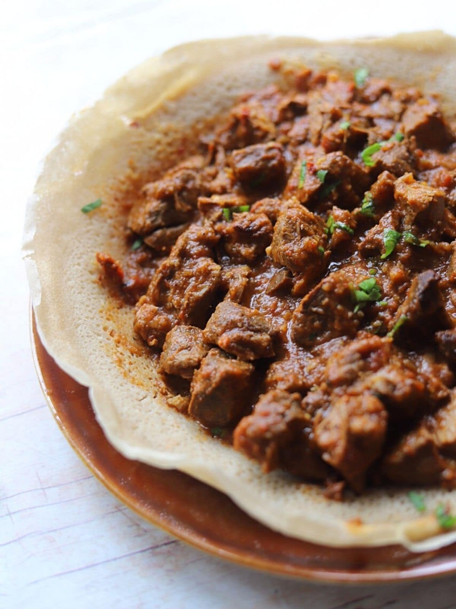

ZIGNI

INGREDIENTS
- 600g of beef shin, diced
- 4 tbsp of olive oil
- 1 onion, diced
- 1 red pepper, quartered then sliced
- 2 garlic cloves, slice
- 1 knob of ginger, grated
- 2 tbsp of berbere
- 2 tbsp of tomato purée
- 3 plum tomatoes, chopped
- 500ml of beef stock
- salt, to taste
- freshly ground black pepper
DIRECTIONS
- Season the diced beef with salt and pepper. Heat 2 tbsp of olive oil in a large pan and sear the beef on a high heat until evenly browned. Remove from the pan and set aside.
- Turn the heat down and add the remaining 2 tbsp olive oil. Sauté the onion, peppers, ginger and garlic with the berbere spice for 5–8 minutes, or until soft
- take a large pan and mix the toasted wheat flour and the boiling water slowly, and carefully.
- Add the tomato purée, stir well and cook out for a further minute
- Return the beef to the pan along with the chopped tomatoes and stock and cover with a lid. Simmer on a very low heat for 1 hour, then remove the lid and simmer for a further half an hour, or until the sauce has reduced and the beef is tender
- Taste to check the seasoning and serve hot with Injera
BACK TO MAIN MENU